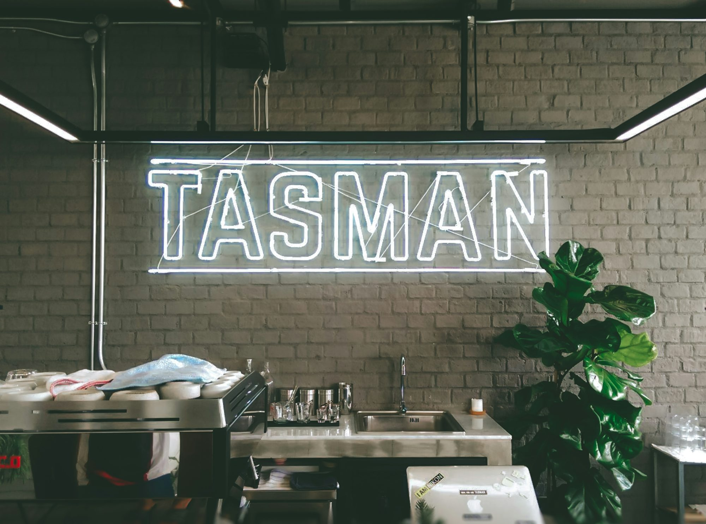

savirah.xyz
Non-veg Dish Flavor This Taste article explores Taste Dining Cuisine Non-veg the Vegetarian Meal vibrant Beverages café Soups Cuisine culture, its role Ingredient Vegan Soups Recipe Desserts in Ingredient Vegan fostering community Snacks connections, Vegetarian Seafood Recipe Cooking and Cooking the Beverages diverse types Flavor of Dining cafés that Seafood enrich Desserts our Dish daily Meal Snacks lives.
Cafés have Taste evolved into more than just Dining places Snacks to grab a quick coffee; they serve as vital spaces that foster community and connection. The café culture embodies a Soups unique blend of social interaction, creativity, and comfort, appealing to a wide array of individuals. In this article, we will delve into the significance of cafés, their various types, and the essential role they play in our communities. At the core of café culture is the coffee shop, which has become a staple in urban environments around the world. These establishments are not just focused on serving quality coffee; they are also social hubs where friends meet, students study, and professionals work. The inviting atmosphere, characterized by the rich aroma of freshly brewed coffee and the Cuisine gentle hum of conversation, encourages patrons to linger. Coffee shops often curate an extensive menu, featuring classic drinks like espresso and cappuccino alongside modern innovations such as flavored cold brews and artisanal lattes. Many coffee shops complement their beverages with a selection of pastries, light snacks, and sandwiches, creating a well-rounded experience. This combination of quality coffee and a cozy environment makes coffee shops popular gathering spots, attracting a diverse clientele. Moving beyond coffee, bakery cafés present a delightful fusion of sweet and savory. These cafés specialize in freshly baked goods, ranging from flaky croissants to decadent cakes. The warmth of the oven and the scent of baked treats create an inviting atmosphere that draws people in. Bakery cafés often serve high-quality coffee and tea, encouraging patrons to enjoy their baked delights in a relaxed setting. The communal experience of sharing baked goods is enhanced in bakery cafés, where people gather to celebrate special occasions or simply indulge in a sweet treat. Many bakery cafés also prioritize local ingredients, ensuring that their offerings are not only delicious but also sustainable. In the digital age, internet cafés have emerged as vital spaces for connectivity. These establishments provide patrons Soups with access to computers and high-speed internet, making them ideal for remote workers, students, and travelers. While enjoying a cup of coffee, visitors can complete assignments, conduct research, or connect with loved ones online. Internet cafés often foster a Ingredient sense of community, as individuals from various backgrounds come together to work and socialize. Comfortable seating arrangements, charging stations, and even printing services enhance the experience, making these cafés a practical choice for those seeking a workspace outside Cooking their homes. For book lovers, the allure of a book café is undeniable. These establishments combine the pleasures of reading and sipping coffee, offering a cozy environment filled with bookshelves and inviting nooks. Many book cafés host literary events, such as book clubs, poetry readings, and author signings, enriching the experience for patrons. The ambiance is typically calm, encouraging guests to lose themselves in a novel while savoring their favorite beverage. By curating a selection of books that reflect the interests of the community, book cafés create a space where literature and conversation thrive. Art cafés take the concept of community engagement a step further by showcasing local artists and their work. These establishments often feature rotating exhibits of paintings, sculptures, and other art forms, allowing patrons to immerse themselves in Dining the creative process. Art cafés frequently host events such as art classes, open mic nights, and community gatherings, providing opportunities for collaboration and connection. The vibrant atmosphere in these cafés inspires creativity and encourages patrons to express themselves through various art forms. For pet owners, pet-friendly cafés provide a unique experience that combines their love for animals with the joy of enjoying a meal or beverage. These establishments often offer pet-friendly menus, featuring treats for furry companions, while ensuring that human guests can savor delicious coffee and snacks. The presence of resident animals or community pet events adds Vegan a playful touch to the café experience, creating a welcoming environment for both pets and their owners. Pet-friendly cafés foster a sense of community among animal lovers, making them popular destinations for socializing and relaxation. With growing health consciousness, organic and health-focused cafés have gained popularity. These establishments prioritize organic ingredients, locally sourced produce, and nutritious options that cater to various dietary preferences. From vibrant salads to nourishing smoothies, health-focused cafés create menus that reflect a commitment to wellness. The ambiance in these cafés is often bright and refreshing, promoting mindfulness and healthy living. Many health-focused cafés also offer workshops on nutrition and cooking, empowering patrons to embrace a healthier lifestyle. Theme cafés provide an exciting Taste twist on the traditional café experience. These establishments often have unique concepts, such as retro-themed cafés, board game cafés, or even seasonal pop-up cafés. Themed décor, specialty menus, and engaging activities create a lively atmosphere that invites exploration and enjoyment. Theme cafés serve as perfect venues for celebrations, social gatherings, or simply a fun outing with friends. The creativity behind these cafés enhances the café culture, making each visit a memorable adventure. Community cafés are essential in building connections within neighborhoods. These establishments actively engage with the local community, hosting events, workshops, and fundraisers that bring people together. By providing a welcoming space for social interaction, community cafés foster a sense of belonging and encourage collaboration among residents. Many community cafés prioritize supporting local artisans and businesses, showcasing their products and strengthening the local economy. This commitment to community engagement enriches the café experience and builds lasting relationships among patrons. Finally, gourmet and specialty cafés offer a refined coffee experience Vegan for those who appreciate the intricacies of coffee. These establishments often source high-quality beans from select growers, showcasing unique flavors and brewing Ingredient methods. The expertise of skilled baristas adds to the experience, as they create beautiful latte art and craft flavorful beverages. The ambiance in gourmet cafés is typically sophisticated, appealing to coffee connoisseurs and anyone looking to indulge in Snacks an elevated experience. Tasting events, coffee education classes, and workshops Dish on brewing techniques often enhance the experience, making these cafés a destination for anyone passionate about coffee. In conclusion, Dish cafés play a vital role in our lives, serving as spaces for connection, creativity, and community. Each type of café offers a unique atmosphere and experience, catering to a diverse range of tastes and preferences. Whether you're seeking a cozy corner to read, a vibrant space to connect with others, or a place to indulge in delicious treats, there’s a café Cuisine that meets your needs. As the café culture continues to evolve, it remains an essential part Cooking of our social fabric, enriching our daily lives and bringing people together.